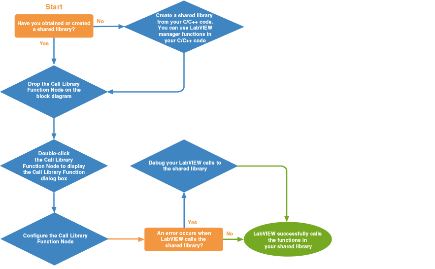

Use the Call Library Function Node to call most standard shared libraries in LabVIEW. Use the Automation Open function with the Property Node and the Invoke Node to call a shared library that contains ActiveX objects.
|
Note (MathScript RT Module) Use functions that belong to the MathScript RT Module libraries class to call shared libraries from the LabVIEW MathScript Window or the MathScript Node. |
The following illustration shows the typical workflow for calling shared libraries in LabVIEW. Click a blue diamond box for detailed information about each step.

 |
(Windows) To view related topics, click the Locate button, shown at left, in the toolbar at the top of this window. The LabVIEW Help highlights this topic in the Contents tab so you can navigate the related topics. |
Configuring the Call Library Function Node
Using Arrays and Strings in the Call Library Function Node
Debugging Shared Libraries and Calls to Shared Libraries
Using LabVIEW Manager Functions in Shared Libraries